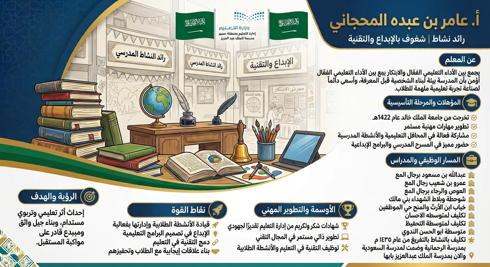

السيرة الذاتية المهنية
عرض موجز للمسيرة المهنية والمؤهلات والخبرات ونقاط القوة والتطوير المهني.
عرض السيرة بالحجم الكامل
عن المعلم
يجمع الأستاذ عامر بن عبده المحجاني بين الأداء التعليمي الفعال والابتكار، ويؤمن بأن المدرسة بيئة لبناء الشخصية قبل المعرفة، ويسعى بصورة مستمرة إلى صناعة تجربة تعليمية ملهمة للطلاب.
المعلومات المهنية
الاسم
عامر بن عبده المحجاني
المجال
رائد نشاط مدرسي
الاهتمامات
الإبداع والتقنية والأنشطة الطلابية
المؤهل
خريج جامعة الملك خالد عام 1422هـ
المؤهلات والمرحلة التأسيسية
- التخرج من جامعة الملك خالد عام 1422هـ.
- تطوير مستمر للمهارات المهنية.
- مشاركة فعالة في المحافل التعليمية والأنشطة المدرسية.
- حضور مميز في المسرح المدرسي والبرامج الإبداعية.
المسار الوظيفي والمدارس
- مدرسة عبدالله بن مسعود برجال ألمع.
- مدرسة عمرو بن شعيب برجال ألمع.
- مدرسة الحوض والرجاء برجال ألمع.
- مدرسة شوحطة وبلاد الشهداء بني مالك.
- مدرسة خباب بن الأرت والمنح بحي الموظفين.
- تكليف لمتوسطة الإحسان.
- تكليف لمتوسطة التحفيظ.
- متوسطة أبو الحسن الندوي.
- التكليف بالنشاط بالتفريغ من عام 1435هـ.
- العمل بمدرسة الرحمانية، ثم ضُمّت لمدرسة السعودية.
- حاليًا بمدرسة الملك عبدالعزيز بأبها.
نقاط القوة
🚀 قيادة الأنشطة الطلابية وإدارتها بفاعلية
💡 الإبداع في تصميم البرامج التعليمية
🔗 دمج التقنية في التعليم
🤝 بناء علاقات إيجابية مع الطلاب وتحفيزهم
الأوسمة والتطوير المهني
- شهادات شكر وتكريم من إدارة التعليم تقديرًا للجهود المهنية.
- تطوير ذاتي مستمر في المجال التقني.
- توظيف التقنية في التعليم والأنشطة الطلابية.
الرؤية والهدف
إحداث أثر تعليمي وتربوي مستدام، وبناء جيل واثق ومبدع وقادر على مواكبة المستقبل.